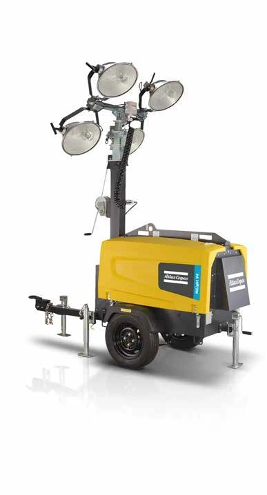

ATLAS COPCO / Equipos auxiliares
HiLight V4
Torre diésel con cuatro focos de halogenuro metálico de 1000 W, mástil manual y puertas de acceso «alas de gaviota».
4000m² de cobertura
4 x 1000W de iluminación
7,5m de altura máxima
Catálogo del fabricante · disponibilidad por confirmar
Consultar este producto
↓ Ver documento del fabricante (PDF, abre en otra pestaña)
Catálogo HiLight · páginas 11, 18 · 2023
CONOCE EL PRODUCTO
Información
técnica.
Datos del documento suministrado. Se conservan las unidades y las alternativas de la fuente.
← Volver a Equipos auxiliares| Cobertura lumínica | 4000 m2 |
|---|---|
| Lámparas | Halogenuro metálico |
| Mástil | Manual vertical |
| Características | Carrocería HardHat® |
| Frecuencia nominal | 50 | 60 Hz |
|---|---|
| Tensión nominal | 230 | 120 V CA |
| Potencia nominal (PRP) | 5,5 | 6 kW |
| Temperatura de funcionamiento (mín./máx.) | -25 / 49 ºC |
| Nivel de ruidos (LwA) | 92 | 94 dB(A) |
| Nivel de presión acústica (LpA) a 7 m. | 71 | 73 dB(A) |
| Tipo | Diésel |
|---|---|
| Modelo | Kubota Z482 |
| Velocidad | 3000 | 3600 r.p.m. |
| Potencia para uso continuo (PRP) | 6,9 | 8,1 kW |
| Refrigerante | Agua |
| Número de cilindros | 2 |
| Modelo | Sincro EK 2 MCT |
|---|---|
| Potencia de salida nominal | 6 | 7,5 kVA |
| Protección de la carrocería/ aislamiento | H / 23 clase/IP |
| Capacidad del depósito de combustible | 110 l |
|---|---|
| Autonomía | 57 | 50 h |
| Potencia auxiliar | 1,4 | 2 kW |
|---|
| Focos | Halogenuro metálico |
|---|---|
| Potencia | 4 x 1000 W |
| Tipo | Vertical manual, 5 secciones |
|---|---|
| Rotación | 360 grados |
| Altura máxima | 7,5 m |
| Velocidad máxima de viento | 80 km/h |
| Tipo | Homologado en la UE o remolque con sistema de nivelación de 4 puntos |
|---|---|
| Bancada base | Bancada libre de derrames |
| Carrocería | Puertas HardHat® ‘alas de gaviota’ |
| Dimensiones de transporte Barra de remolque fija (largo x ancho x alto) | 1,67 x 1,10 x 2,50 m |
|---|---|
| Peso | 670 kg |
| Consumo indicado | 2 l/h |
|---|---|
| Vida útil de lámparas indicada | hasta 6000 h |
¿ES EL PRODUCTO QUE NECESITAS?